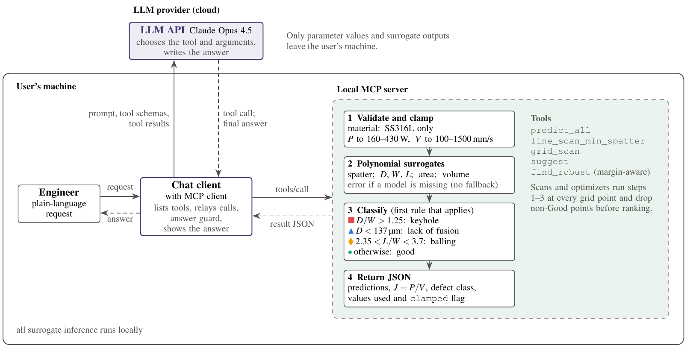
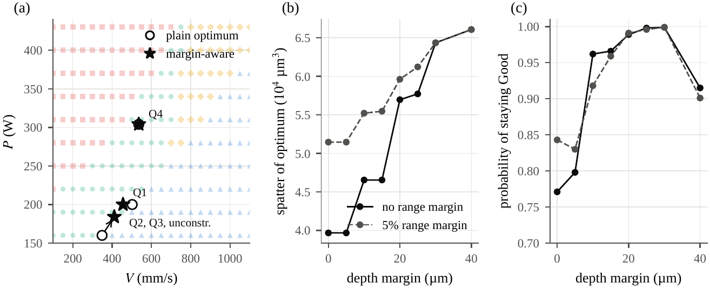
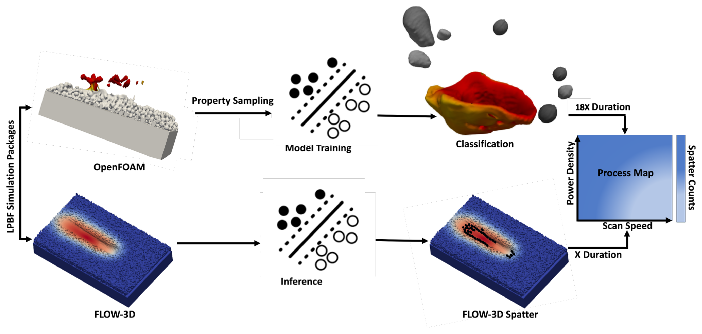
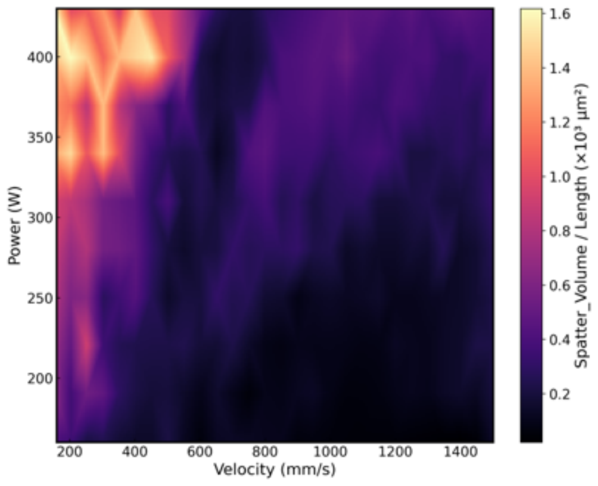

Toward one verified-agent platform for smart manufacturing
One pattern, many processes: proven on welding, LPBF and stamping, next on machining, semiconductor and chemical manufacturing.
THRUST 1
Verified agents for process design
Reach a defect-free process window in fewer builds.
Agents propose, optimizers run in code
First study: LPBF parameter selection
THRUST 2
In situ sensing, diagnosis and control
Replace part of post-build inspection with auditable decisions.
Physics-informed rare-defect data
From flagging to closed-loop control
THRUST 3
Reliability science across processes
Turn design rules into tested, general principles.
Same rules tested across processes
Open, pre-registered benchmarks
Vision · illustrative animation
The agentic factory floor
Where this is heading: a team of agents running a mixed shop floor, with code deciding and the engineer in charge. Pick a scenario.
Illustrative concept, not a deployed system. The welding, stamping and AM pieces are studied in my projects; machining, the shared floor and the robot loop are the next steps of the research program.
Research thrust · illustrative animation
From failure to floor: how an agent earns its place
Before any agent joins a floor like the one above, each failure it shows is reproduced by a test, scored like a process FMEA, fixed with a design control, and only then allowed one step closer to the floor. Every model update sends it back to re-qualification. This is planned work.
1 · Test
2 · Catalogue
3 · Remedy
4 · Deploy
Test bench and failure catalogue
Agent
● failure found✓ passes re-test
Occurrence
Severity
Detectability
Risk priority (O × S × D)–
Deployment ladder
1
Offline benchmark
catalogue tests passed, top risks controlled
2
Shadow mode
runs beside the plant; decisions logged, not used
3
Advisory
recommends; an engineer signs off
4
Bounded autonomy
low-risk, reversible decisions behind code gates
5
Monitored operation
ongoing checks against the catalogue
model v+1update arrives: frozen benchmark rerun before it climbs again
Illustrative scores. The flow, tests and controls follow the design rules in my welding, stamping and additive manufacturing studies.
Projects
Selected projects
Click a card for figures and details.
AgentAM: a verified agent for LPBF process optimization
AgentAM gives a language-model agent plain-language access to CFD-trained surrogates of spatter and melt pool geometry for SS316L through the Model Context Protocol. The agent reads the request, chooses a tool and its inputs, and reports only values that the tools return. Geometric criteria assign each power and velocity point a defect regime (keyhole, lack of fusion, balling or stable), and a margin-aware optimizer moves minimum-spatter optima away from defect boundaries.
93.4%defect-regime match with simulation (cross-validated)
0.94 → 1.00estimated probability of staying defect-free under 2% drift
80%answers with fabricated results when the same model had no tools
From a plain-language request to a verified result: the agent, the local MCP tool server and the evaluation layer.

Architecture: all surrogate inference runs locally; only parameter values and model outputs reach the language model.

Margin-aware optimization trades a little spatter for distance from the lack-of-fusion boundary.
O. T. Ajenifujah and A. Barati Farimani. AgentAM: an AI agent for spatter- and defect-aware process optimization in laser powder bed fusion. Preprint; being revised for journal submission. arXiv:2611.05171
Spatter mechanism and process window in LPBF
Spatter is a primary source of defects in laser powder bed fusion, but simulations that resolve it are too expensive to map a wide process space. I coupled high-fidelity OpenFOAM simulations, which resolve recoil-driven spatter ejection, with machine learning and a faster commercial solver (FLOW-3D). A classifier trained on high-fidelity melt pool and spatter fields transfers to FLOW-3D melt pools, so spatter can be predicted across many conditions at low cost. SHAP and feature-importance analyses identify pressure, vertical velocity and the balance between recoil pressure and surface tension as the main drivers of ejection.
94%classifier accuracy on held-out data
281power and velocity conditions in the process map
~18×faster than high-fidelity simulation alone (about 4 vs 72 h per case)
High-fidelity OpenFOAM simulation (top view): the laser melts the powder bed and the melt pool deepens into a keyhole, colored by temperature.Discrete element simulation of powder spreading and settling, which builds the powder bed for the melt pool and spatter simulations.

Framework: OpenFOAM-trained classifier applied to FLOW-3D melt pools to build a spatter process map.

Predicted spatter volume per track length across laser power and scan speed.
The high-fidelity model is validated against measured melt pool dimensions, temperature, and spatter size and velocity. Sponsored by the Army Research Laboratory. O. T. Ajenifujah, F. Ogoke, F. Wirth, J. Beuth and A. Barati Farimani. Additive Manufacturing, under review. arXiv:2405.07823
Verified agents for production welding decisions
On the General Motors Cognitive Manufacturing project, I lead the University of Michigan work on language-model agents that operate validated quality and maintenance models for ultrasonic metal welding, the joining process used in battery and electrical assembly.
I built a process-agnostic evaluation harness that wraps validated diagnostic models as tools, grades every answer by exact match against a key computed in code (no language-model judge), and replays every tool call to locate each failure. With it I ran a connected series of studies, several pre-registered, each answering a question a plant must settle before it lets an agent touch a quality decision:
Where do agents fail? Separating the agent's errors from the models' errors.
Can a plant run agents on its own hardware? Hosted frontier models compared with local open-weight models from 4 to 122 billion parameters.
How should an agent be built? Designs in which the agent states the rule and code computes it.
Is a correct answer the right decision? Cost-aware ship, hold or inspect decisions from calibrated strength models.
Results are being prepared for publication with General Motors and will be posted here as they appear.
One agent or a team? Multi-agent design for a multi-line plant
When a plant has many lines and thousands of welds, should one agent answer, or a team? I compared single agents with teams split by expert and teams split by the items themselves, with a shared board and code-computed decisions per weld, on a four-line plant built from real welds. A pre-registered follow-up varies the number of agents to ask how large a team should be, and why a team can be no more reliable than its weakest member.
The resulting design rules (split the items rather than the expertise, let code decide each item, and size teams to their weakest member) are now being tested on open data from laser powder bed fusion and CNC machining.
Manuscript in preparation; results will be posted when published.
Explainable monitoring for sheet-metal stamping
With Yue Cao, I lead explainable AI for stamping in a second General Motors project. The signal is the four-corner tonnage curve that presses already record on every stroke, an underused sensor at no extra cost. We built a connected pipeline in which each study hands its output to the next:
Detect: unsupervised methods that track a normal which drifts from run to run.
Localize: regional PCA that splits each stroke into physical phases (pre-load, binder shoulder, peak, recoil) and shows which phase drives an anomaly.
Verify: recurring fingerprints reviewed with plant engineers and mapped to verified root causes.
Synthesize: physics-informed and language-guided generators for rare faults, where one fault changes one physical term.
Classify: naming the fault family, as a step toward decision support and process optimization.
The same structure (a signal recorded on every part, a drifting normal, few labeled faults, and engineers who need the cause rather than a flag) recurs in welding and additive manufacturing, which is why these methods transfer to layer-wise AM monitoring.
Results will be posted when published.
Process-agnostic molten pool dynamics with thermal memory
Illustration of the idea: as layers build up, heat stored in the workpiece rises, and the same input makes a larger pool. The model tracks both states, pool geometry and stored heat.
Molten pool behavior in arc welding and wire arc additive manufacturing depends on the current input and on the heat already stored in the workpiece. Energy balances reduce the pool dynamics to two states, pool geometry and stored heat, and a physics-structured neural ordinary differential equation keeps this structure while learning the unknown relations from data. A representation built on a frozen pretrained vision model supplies the pool state directly from process camera images, with one network design for GTAW, GMAW and WAAM.
Finite-volume simulation in which heat accumulates in the workpiece, the hidden state the model infers from the pool alone. Video courtesy of Yue (Troy) Cao.Gas tungsten arc welding pool images, one of the three processes modeled. Video courtesy of Yue (Troy) Cao; see his project page.
Y. Cao, O. Ajenifujah, Y. Yang, Y. M. Zhang, J. Abell and C. Shao. Process-agnostic modeling of arc-based molten pools: physics-structured latent dynamics with workpiece thermal memory. In preparation.
Generative models and LLMs for additive manufacturing
With colleagues in the Barati Farimani lab, I helped develop generative diffusion models that reconstruct high-fidelity melt pool fields from inexpensive low-fidelity simulations, AMGPT, a retrieval-augmented language model for evidence-grounded querying of the metal AM literature, and AMUI, a data-driven user interface for process optimization. My own constitutive models use machine learning and symbolic regression to express melt pool geometry and spatter generation as interpretable functions of process conditions, from calibrated simulations over about 280 power and velocity cases.
OpenFOAM simulation of a spatter event during laser traversal of the powder bed.
Ogoke et al., Materials & Design (2024); Chandrasekhar et al., Additive Manufacturing Letters (in press); Pak et al., SFF 2024.
Semiconductor process equipment modeling
Before my PhD, I spent four years at Applied Materials. As a computer-aided engineer, I built CFD and FEA models (CFD-ACE+, ANSYS, StarCCM+) for epitaxy, atomic layer, metal deposition and oxide-etch chambers, covering flow, heat transfer and reaction chemistry; modeled film chemistry for GaN, AlN and oxide deposition; ran ray-tracing simulations of epitaxy lamp heads; and built a SEMI S23 tool that reports energy use and equivalent CO2 for deposition chambers. As a process engineer, I improved chemical mechanical planarization through post-polish cleaning chemistries and characterized pad materials.
This is why semiconductor processing is a natural next process for the verified-agent platform.
Energy materials: carbide catalysts, from experiment to ML mechanism
Phase-pure tungsten carbides (hexagonal W2C, rock-salt WC1−x and hexagonal WC), made by temperature-programmed reaction, behave very differently for alcohol oxidation in alkaline electrolyte. W2C starts methanol oxidation earliest, about 0.25 V before WC1−x, while WC is inactive. Reaction free energies from a universal machine-learning interatomic potential (UMA) explain why: dehydrogenation runs downhill on W2C, and oxygen-covered W2C removes adsorbed CO at about 0.6 V.
Left: the three phases. Middle: measured onset of methanol oxidation (0.5 M KOH). Right: free-energy diagram at 0 VRHE from the machine-learning potential.
This builds on my earlier work with Prof. Levi Thompson at the University of Michigan on platinum and bimetallic catalysts on carbide supports, electrochemical hydrogenation, and charge storage in nitrides and carbides for supercapacitors.
Selected: Chemical Engineering Journal (2021); Nano Energy (2018, 2019); Journal of Power Sources (2015); Journal of Catalysis (2012).
Publications
Publications and presentations
Preprints and under review
Ajenifujah, O. T., & Barati Farimani, A. AgentAM: an AI agent for spatter- and defect-aware process optimization in laser powder bed fusion. Preprint; being revised for journal submission. arXiv:2611.05171first author
Ajenifujah, O. T., Ogoke, F., Wirth, F., Beuth, J., & Barati Farimani, A. Integrating multi-physics simulations and machine learning to define the spatter mechanism and process window in laser powder bed fusion.Additive Manufacturing, under review. arXiv:2405.07823first author
Journal articles
Chandrasekhar, A., Chan, J., Ogoke, F., Ajenifujah, O., & Barati Farimani, A. AMGPT: a large language model for contextual querying in additive manufacturing.Additive Manufacturing Letters, in press.
Ogoke, F., Liu, Q., Ajenifujah, O., Myers, A. J., Quirarte, G., Beuth, J., Malen, J., & Barati Farimani, A. (2024). Inexpensive high fidelity melt pool models in additive manufacturing using generative deep diffusion.Materials & Design, 113181.
Khan, M. M., Bashir, S., Khan, M. W., & Ajenifujah, O. T. (2025). Reducing emissions and fuel consumption in supersonic aviation with ammonia hybrid engines.International Journal of Hydrogen Energy, 162, 150540.
Ajenifujah, O. T., Nouralishahi, A., Carl, S., Eady, S., Zhao, J., & Thompson, L. T. (2021). Platinum supported on early transition metal carbides: efficient electrocatalysts for methanol electro-oxidation reaction in alkaline electrolyte.Chemical Engineering Journal, 406, 126670.first author
Djire, A., Pande, P., Deb, A., Siegel, J., Ajenifujah, O. T., He, L., Sleightholme, A. E., Rasmussen, P., & Thompson, L. T. (2019). Unveiling the pseudocapacitive charge storage mechanisms of nanostructured vanadium nitrides using in-situ analyses.Nano Energy, 60, 72–82.
Djire, A., Ajenifujah, O. T., & Thompson, L. T. (2018). Extent of pseudocapacitance in high-surface area vanadium nitrides.Batteries & Supercaps.
Djire, A., Siegel, J. B., Ajenifujah, O., He, L., & Thompson, L. T. (2018). Pseudocapacitive storage via micropores in high-surface area molybdenum nitrides.Nano Energy, 51, 122–127.
Bazyari, A., Mortazavi, Y., Khodadadi, A. A., Thompson, L. T., Tafreshi, R., Zaker, A., & Ajenifujah, O. T. (2016). Effects of alumina phases as nickel supports on deep reactive adsorption of (4,6-dimethyl)dibenzothiophene: comparison between γ, δ, and θ-alumina.Applied Catalysis B: Environmental, 180, 312–323.
Djire, A., Ajenifujah, O. T., Sleightholme, A. E., Rasmussen, P., & Thompson, L. T. (2015). Effects of surface oxygen on charge storage in high surface area early transition-metal carbides and nitrides.Journal of Power Sources, 275, 159–166.
Schaidle, J. A., Schweitzer, N. M., Ajenifujah, O. T., & Thompson, L. T. (2012). On the preparation of molybdenum carbide-supported metal catalysts.Journal of Catalysis, 289, 210–217.
Manuscripts in preparation
Ajenifujah, O. T., et al. Orchestration reliability and failure modes of tool-using large language model agents for manufacturing quality and maintenance decision support.
Ajenifujah, O. T., et al. Hosted versus local open-weight LLM agents for manufacturing decisions: correctness, grounding, interface effects, and cost.
Ajenifujah, O. T., et al. Designing grounded LLM agents for manufacturing decisions: evidence from ultrasonic metal welding.
Ajenifujah, O. T., et al. From correct to right: language-model agents making compound quality decisions over validated ultrasonic welding models.
Ajenifujah, O. T., et al. The role of work division, shared memory and verification in tool-using large language model agents for multi-line manufacturing quality decisions.
Cao, Y., Ajenifujah, O., Yang, Y., Zhang, Y. M., Abell, J., & Shao, C. Process-agnostic modeling of arc-based molten pools: physics-structured latent dynamics with workpiece thermal memory.
Ajenifujah, O. T., Ogoke, F., Wirth, F., Beuth, J., & Barati Farimani, A. Derivation of constitutive model for melt pool features in additive manufacturing via machine learning.
Ajenifujah, O. T., Ogoke, F., Wirth, F., Rollett, A., Beuth, J., & Barati Farimani, A. Discovery of spatter constitutive models in additive manufacturing using machine learning.
Selected presentations
Ajenifujah, O. T., Ogoke, F., Beuth, J., & Barati Farimani, A. Application of multi-physics simulations and machine learning to predict spatter in laser powder bed fusion. TMS 2025, Las Vegas, NV, March 2025.
Ajenifujah, O. T., Ogoke, F., Wirth, F., Beuth, J., & Barati Farimani, A. Combining multi-physics simulations with machine learning to elucidate spatter mechanisms and establish process map in laser powder bed fusion. MS&T 2024, Pittsburgh, PA.
Ajenifujah, O. T., Ogoke, F., Wirth, F., Beuth, J., & Barati Farimani, A. Synergizing machine learning and multiphysics simulation for spatter process map generation in LPBF processes. Solid Freeform Fabrication Symposium, Austin, TX, August 2024.
Pak, P., Ogoke, F., Chandrasekhar, A., Guntuboina, C., Ajenifujah, O., Rollett, A., Beuth, J., & Barati Farimani, A. AMUI: a data-driven additive manufacturing user interface for process optimization. SFF 2024, Austin, TX.
Ogoke, F., et al., Ajenifujah, O., et al. Applying generative deep learning models for cost-effective monitoring and simulation of LPBF processes. SFF 2024, Austin, TX.
Ajenifujah, O. T., Eady, S., Nouralishahi, A., & Thompson, L. T. Platinum supported on early transition metal carbides: efficient electrocatalysts for methanol electro-oxidation in alkaline electrolyte. NOBCChE National Conference, St. Louis, MO, 2019. Oral.
Djire, A., Ajenifujah, O. T., et al. Charge storage mechanisms in carbides and nitrides. Electrochemical Society Meeting, Chicago, IL, 2015, and talks at AIChE, ECS and the Power Sources Conference, 2013 to 2014.
Teaching
Teaching
I want students to leave my courses able to explain the physics behind a result, check whether a model or an AI tool is giving a sound answer, and make a decision with its uncertainty stated.
Teaching support · University of Michigan · Fall 2026
ME 499/599: Data Science for Manufacturing Quality Control
With Prof. Chenhui Shao: I help prepare homework, hold office hours, and mentor student teams on course projects built on real manufacturing data, from proposal to an industry-style final review.
Teaching assistant · Carnegie Mellon · Fall 2023
Mechanical Systems Experimentation
Weekly labs for about 30 students on vibration, system identification and feedback control (P, PI, PID) in MATLAB and Simulink.
Teaching assistant · Carnegie Mellon · Spring 2025
Product Design (senior capstone)
Mentored teams on design for manufacture and assembly, FMEA and life-cycle assessment, with ABET-aligned documentation.
Course in development · graduate · 14 weeks
Generative AI for Manufacturing
Transformers for process signals, diffusion models for defects, retrieval over standards, tool-using agents over validated process models, trace-audited evaluation, and deployment of local models on the plant floor.
Mentoring and service
Mentoring
I mentor three first-year undergraduate researchers through the University of Michigan's Undergraduate Research Opportunity Program (UROP) on AI agents for manufacturing. Each student owns a real piece of the research, writes a short plan before each study, and meets with me weekly.
Founder and President · since 2019
The Fujah Foundation
A nonprofit that expands access to clean water and educational resources in underserved communities, including school supplies and basic STEM enrichment.
Applied Materials · 2019 to 2020
Vice President, Young Professional Network
Led program planning and professional development; new-graduate recruiter at the University of Michigan.
Experience and education
Experience
2026 to present
Postdoctoral Research Fellow, University of Michigan
Mechanical Engineering, with Prof. Chenhui Shao and Prof. Jeffrey Abell. AI agents and explainable monitoring for manufacturing with General Motors.
2021 to 2025
Ph.D., Mechanical Engineering, Carnegie Mellon University
Advisor: Prof. Amir Barati Farimani. Thesis: Machine Learning Models for Spatter Reduction in Additive Manufacturing. GEM Fellow; research sponsored by the Army Research Laboratory.
2017 to 2021
Applied Materials
Computer Aided Engineer and Process Engineer: CFD and FEA for deposition and etch chambers, CMP process improvement.
2009 to 2016
B.S.E. and M.S.E., Chemical Engineering, University of Michigan
Research in catalysis and electrochemical energy storage with Prof. Levi Thompson.
2026Began mentoring three first-year UROP researchers on manufacturing agents.
Mar 2026Joined the University of Michigan to lead AI agents research on the General Motors Cognitive Manufacturing project.
Dec 2025Completed my Ph.D. in Mechanical Engineering at Carnegie Mellon University.
Mar 2025Presented spatter prediction work at TMS 2025, Las Vegas.
Aug 2024Three presentations at the Solid Freeform Fabrication Symposium, Austin.
Contact
Let's work together
I am glad to talk with engineers, students and partners interested in trustworthy AI for manufacturing, from additive manufacturing to semiconductor and chemical processing.
 OA
OA